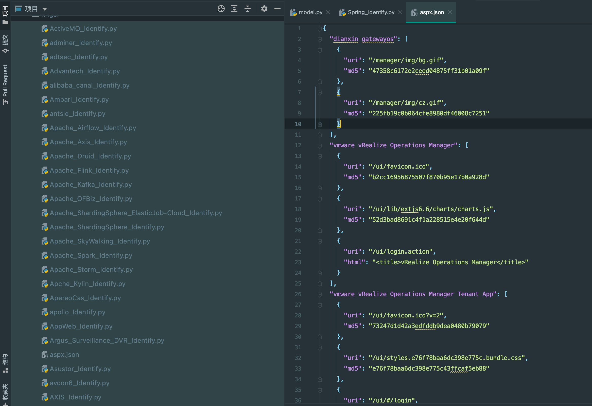
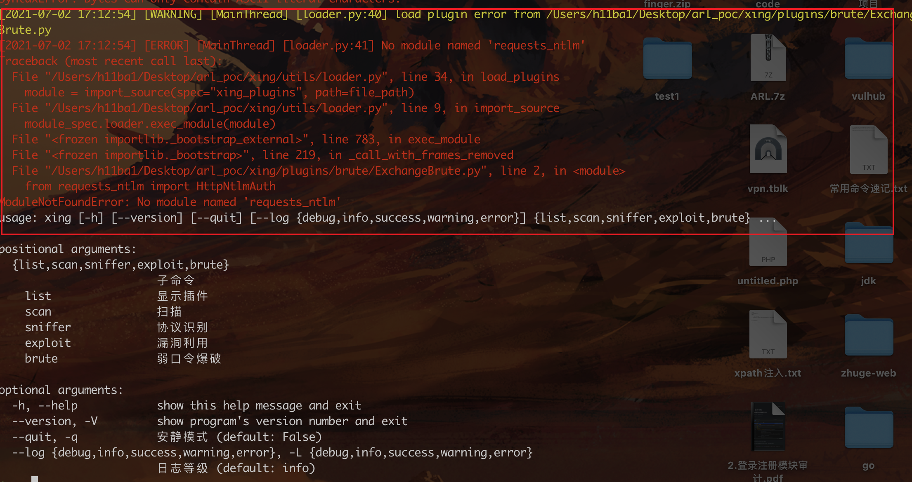
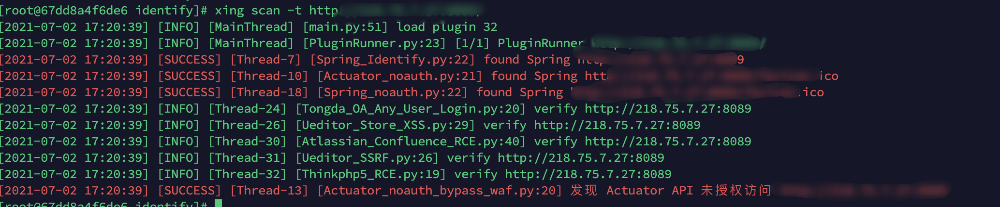

最新版的arl增加了poc编写与探测的功能。打算自己编写一些常用poc来提高杀伤力。
因为主要用来做资产发现，本人更注重于指纹识别以及一些简单的poc探测。主要关注一下几个方面
指纹识别： 1 2 3 4 5 shiro struts2 weblogic spring solr
简单的poc探测： 1 2 3 springboot未授权 swagger接口文档发现 ...
敏感资产发现： 1. arl poc框架 arl poc工具存在于v2.3.1镜像中。
1 docker pull tophant/arl:v2.3.1
进入镜像：
1 2 3 4 5 docker exec -it arl_web /bin/bash find / -name poc cd /opt/ARL-NPoC/xing/ # 进入poc框架目录，可直接将ARL-NPoC打包拷贝出来进行本地使用
Arl-npoc本地使用：
1 2 3 4 5 6 7 8 9 10 11 12 13 14 15 16 17 18 19 20 xing -h usage: xing [-h] [--version] [--quit] [--log {debug,info,success,warning,error}] {list,scan,sniffer,exploit,brute} ... positional arguments: {list,scan,sniffer,exploit,brute} 子命令 list 显示插件 scan 扫描 sniffer 协议识别 exploit 漏洞利用 brute 弱口令爆破 optional arguments: -h, --help show this help message and exit --version, -V show program's version number and exit --quit, -q 安静模式 (default: False) --log {debug,info,success,warning,error}, -L {debug,info,success,warning,error} 日志等级 (default: info)
针对单个目标探测；
1 xing scan -t http://218.75.7.27:8089/
2.如何编写 2.1 各个函数的意义 __init()__:初始化函数。1 2 3 4 5 6 7 8 9 10 def __init__ (self ): super (Plugin, self).__init__() self.plugin_type = PluginType.POC self.vul_name = "泛微 Ecology getdata.jsp SQL注入漏洞" self.app_name = 'Ecology' self.scheme = [SchemeType.HTTP, SchemeType.HTTPS]
verify():验证函数。1 2 3 4 5 6 def verify (self, target ):```python def http_req (url, method = 'get' , **kwargs ):
post请求实例：
1 http_req(url, 'post' , data=data)
http_req()处理方法。 1. content(): # 获取响应包 1 2 3 4 conn = http_req(url, "get" ) if b"GitLab" not in conn.content: return False
2. json(): # json处理响应包 1 2 conn = http_req(url, "get" ) data = conn.json()
3. status_code： #获取响应值 1 2 3 conn = http_req(url, "get" , auth=(user, passwd)) if conn.status_code == 200 : return True
4. text: #获取响应体。和content类似吧 1 2 3 conn = http_req(url, "get" ) pattern = r'<meta\s+name="csrf-token"\s+content="([^\"]+)+"\s+/>' matches = re.findall(pattern=pattern, string=conn.text)
1 2 3 4 conn = http_req(url, "get" ) if self._check_str not in conn.headers.get("WWW-Authenticate" , "" ): return False
6.self.logger.debug() #信息回显 1 2 3 4 5 6 7 8 9 10 11 12 self.logger.debug("not Ecology {}" .format (target)) def init_logger (): log_colors = { 'DEBUG' : 'white' , 'INFO' : 'green' , 'SUCCESS' : 'red' , 'WARNING' : 'yellow' , 'ERROR' : 'red' , 'CRITICAL' : 'bold_red' , }
3.如何优雅的编写 因为手里有很多的json指纹文件和poc，一个个手动转成arl的poc不太现实。编写脚本自动根据arl的poc格式生成poc脚本。
指纹自动生成： python脚本：
1 2 3 4 5 6 7 8 9 10 11 12 13 14 15 16 17 18 19 20 21 22 23 24 25 26 27 28 29 30 31 32 33 34 35 36 37 38 39 40 41 42 43 44 45 46 47 48 49 50 51 52 53 54 55 56 57 58 59 60 61 62 63 64 65 66 67 68 69 70 71 72 73 74 75 76 77 78 import jsonfinger_file = 'aspx.json' str = """ from xing.core.BasePlugin import BasePlugin from xing.utils import http_req, get_logger from xing.core import PluginType, SchemeType import requests import hashlib class Plugin(BasePlugin): def __init__(self): super(Plugin, self).__init__() self.plugin_type = PluginType.POC self.vul_name = "发现{{name}}" self.app_name = '{{name}}' self.scheme = [SchemeType.HTTP, SchemeType.HTTPS] def verify(self, target): """ html = """ url = target + "{{uri}}" if b'{{html}}' in http_req(url).content: self.logger.success("found {{name}} {}".format(url)) return url """ md5 = """ url = target + "{{uri}}" con = http_req(url).content hl = hashlib.md5() hl.update(con) md5 = hl.hexdigest() if md5 == '{{poc_md5}}': self.logger.success("found {{name}} {}".format(url)) return url """ def write_file (filename, str2 ): fo = open (filename, "a" ) fo.write(str2) fo.close() def check (name, rule, file_name ): if 'md5' in rule: tmp_md5 = '' tmp_md5 = md5.replace("{{poc_md5}}" , rule['md5' ]) tmp_md5 = tmp_md5.replace("{{uri}}" , rule['uri' ]) tmp_md5 = tmp_md5.replace("{{name}}" , name) write_file(file_name, tmp_md5) elif 'html' in rule: tmp_html = html.replace("{{html}}" , rule['html' ]) tmp_html = tmp_html.replace("{{uri}}" , rule['uri' ]) write_file(file_name, tmp_html) else : None def parser (finger_file ): with open (finger_file) as f: fin_data = json.load(f) for fin_dict in fin_data: name = fin_dict file_name = name.replace(" " , "_" ) + '_Identify.py' tmp_str = str .replace("{{name}}" , name) write_file(file_name, tmp_str) for i in range (len (fin_data[fin_dict])): rule = fin_data[fin_dict][i] check(name, rule, file_name) parser(finger_file)
运行即可将指定的json指纹文件生成arl格式的指纹文件：

生成指纹测试： 自动生成的指纹可能存在很多的问题，可在本地简单测试保证不爆红之后再同步到远程arl。
将ARL-NPoC拷贝到本地，按照readme提示安装：
1 2 3 pip3 install -e . # 安装依赖 python3 setup.py --help-commands # 查看安装命令帮助 python3 setup.py install # 安装
安装到本地之后可通过xing -h查看是否安装成功：

提示帮助的同时也会加载编写好的插件，错误的插件会报错，此时就可以针对这些报错的插件做针对性修改。
指纹同步到远程服务器： 这里有一个很大的坑点，我将poc同步到arl_web这个容器中。在容器里运行测试poc是成功的

但是我搭建在服务器上的arl测试却没有没有探测到。坑了我好久，最后去github 提issues。作者回答说要同步到arl_web和arl_work两个容器……
最后同时拷贝到arl_web和are_work两个容器，指纹poc就能使用了。src/红队又多了一个好帮手。

 alipay
alipay